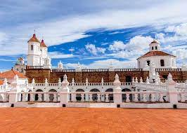

La ciudada donde me encuentro
Sucre
conocido como la ciudad blanca un hermosos lugar con clima calido
Tiene varios lugares turisticos como la recoleta o el Parque Cretacico y muchos otros.
La Iglesia Católica desde 1552 cuando la ciudad fue elevada al rango de sede episcopal, en 1609 a sede arzobispal y hasta 1983 en sede cardenalicia, siendo su última cabeza el cardenal José Clemente Maurer (1900-1990), enterrado en la Catedral.
La Real Audiencia de Charcas, cuya administración política, judicial y normativa, establece su sede y capital en 1559, con una extensa jurisdicción con costas en el Pacífico y el Atlántico.
La Universidad Mayor, Real y Pontificia de San Francisco Xavier de Chuquisaca creada por la Compañía de Jesús en 1623 una de las primeras de América célebre centro intelectual de difusión del neotomismo y las doctrinas jesuitas contra la tiranía, cuya importancia en América del Sur se hizo sentir de manera muy fuerte